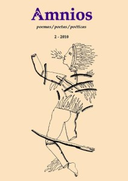

Por ALEJO CARPENTIER.

Ô la couleur des brises circulant sur les eaux calmes,
les palmes des palmiers qui bougent!
et pas un aboiement lointain de chien qui
signifie la hutte; qui signifie la hutte et la fumée
du soir et les trois pierres noires sous l’ odeur du piment.
Mais les chauves-souris découpent le soir mol à petits cris
Evoco mi infancia: aquella finca desde donde, en días sin brisa, se divisaban inmóviles y enhiestos, los humos de La Habana; la cañada donde me bañaba desnudo, yendo a buscar, con la cara, entre los juncos de raíces herrumbrosas, las frescas bocas de manantiales ocultos. Tras los guayabos olorosos, era el camino por donde, los viernes, acudía la lavandera del chal azafrán, aljorcas doradas y fino perfil yoruba, seguida de la anciana portadora de cestas, arrugada y sentenciosa, What, ciertos días, se daba a hablar de un larguísimo viaje hecho en su juventud, con argolla al tobillo, en los sollados de un barco negrero. Pero yo, desatento a sus cuentos, sólo tenía ojos para contemplar a la mulata silenciosa, de largas piernas relucientes, altos pechos y mirada esquiva, que aguardaba, paciente el recuento hecho por mi madre, de las ropas traídas en una cesta olorosa a vetiver…Y muchos, muchos años más tarde, habría yo de encontrar nuevamente la emoción de esos momentos, el sabor de un agua que creía olvidada, los inexplicables estremecimientos anunciadores de una adolescencia ya próxima, abriendo, one day, un libro de Saint-John Perse:
Alors, on te baignait dans l’ eau —de-feuilles-vertes; et l’ eau encore était
du soleil vert; el les servantes de ta mère, grandes filles luisantes, remuaient
leurs jambes chaudes près de toi qui tremblais…
En la isla de Nuestra Señora de Guadalupe. Muy precisamente en la Basse-Terre. An afternoon, asisto a un gracioso espectáculo que me divierte enormemente y que habrá de pasar a mi novela El siglo de las luces… «De buenas ganas hubiera trasladado el Comisario su residencia a la quieta y acogedora parroquia de Saint François, pero el puerto, bueno para la descarga del ganado traído de las islas cercanas, ganado que era arrojado por sobre las bordas, al llegar, para que fuese nadando hasta la orilla, era escaso resguardo para su flota» . Y habría de leer hoy, repasando la obra inmensa de Saint-John Perse:
Pour débarquer des boeufs et des mulets,
On donne à l’eau, par- dessus bord, ces díeux coulés en bronze et frottés
de résine
L’eau les vante! jaillit!
Et nous les attendons à quai avec des lattes
élevées en guise de flambeaux; et nous tenons les yeux
fixés sur l’ étoile de ces fronts…
¡Poder de transfiguración, de magnificación, poetry!
Estoy en la Gran Sabana (1947), nueve años después del descubrimiento de ese nudo rocoso del continente, del cual descienden, tumultuosos y atropellados, los grandes ríos que van a parar al Orinoco, meseta inmensa donde doscientas cuarenta aguas entretejen sus corrientes, entre montañas geométricas, de basalto negro, aisladas unas de otras, que inventan, para hombres incapaces todavía de tal invención, todos los estilos arquitectónicos que habrán de encontrar en el futuro. AND, en ese mundo de estructuras, anteriores a las estructuras de teoremas anteriores a los teoremas, me viene al encuentro un hombrecillo que, en tal presencia de formas puras, en un aire limpio que muy poco —virgen aún— ha sido exhalado por pulmones «civilizados», me says, mostrándome un incipiente caserío: «Soy fundador de ciudades». AND, tras las solemnes palabras oídas, I think, una vez más, en Saint-John Perse:
Sur trois grandes saisons, n’établissant avec honneur,
J’augure bien du sol où j’ai fondé ma loi .
Y son las palmas verdes, unidas a mi humano destino como un elemento de heráldica; y son los manglares donde «peces lentos, entre el fango liberan burbujas con sus cabezas planas»; y son las «altas raíces curvas» que celebraban «el irse de vías prodigiosas, la invención de bóvedas y de naves»; y son las bocas que «tienen el sabor de las pomarrosas en el río, antes de mediodía»; y son los ancianos, «antes que nadie despiertos, que abren persianas y miran al cielo y el mar que cambia de color», C’est alors que l’ odeur du café remonte l’ escalier , verso trivial, si se quiere, pero que, para un hombre de mi ámbito, de mi mundo, tiene resonancias emocionales más hondas y auténticas que las que pueden suscitar las más hermosas descripciones del palacio de Ulises. Porque, en el universo —y el universo es, tan completo y poblado como el de un Juan Sebastián Bach, como el de un Pablo Picasso— de Saint-John Perse, hay siempre una presencia, latente o manifiesta (esto último en los primeros poemas) de lo que llamaban ya Antillas los cartógrafos anteriores al viaje de las Tres Carabelas —Antillas inscritas ahora en el contexto de América toda. Amo a los poetas de hálito universal que me hablan de árboles heráldicos, de islas incontables, de aves migratorias, de los grandes vientos que soplan sobre la faz del planeta, de pueblos en marcha, de anábasis, y de altas ciudades «que se iluminan» —como mi ciudad natal— sobre «todo su frente de mar».
Hay poetas de adorno, de muy grata lectura, pero que si no se leen nos dejan igual que antes —no ha pasado nada— en la desnortada espera del tiempo futuro agustiniano, con un pasado recuerdo que no acaba de integrarse en el presente-intuición-mirar. Y hay poetas esenciales y necesarios, presentes en las tres categorías del transcurso, que nos acompañan a todo lo largo de una vida, ayudándonos a cobrar conciencia de nosotros mismos, y a recuperar, escribiendo ellos la historia de nuestra propia existencia, sabores, sensaciones, perfumes, imágenes, emociones, arrestos que creíamos olvidados. Poetas de tal categoría hay sólo dos o tres por siglo. Poetas de la revelación; poetas de las cosmogonías; poetas de la inmensidad explicada, acaso por el portentoso verdor de una brizna de hierba, por un paisaje familiar fugazmente entrevisto en un restallar de persianas; poetas que, en una estrofa de implicaciones vertiginosas, integran el Uno con el Todo.
Saint-John Perse es poeta de tal casta. Y tras de él no veo, in France, quien se nos anuncie en tal nivel de magnificencia y magnitud.
ALEJO CARPENTIER (Havana, Cuba, 1904–París, France, 1980). Narrador, essayist, journalist. Autor de El reino de este mundo y El siglo de las luces, entre otras novelas. Award
Cervantes 1978.
Nº 1 de Amnios


Recent Comments